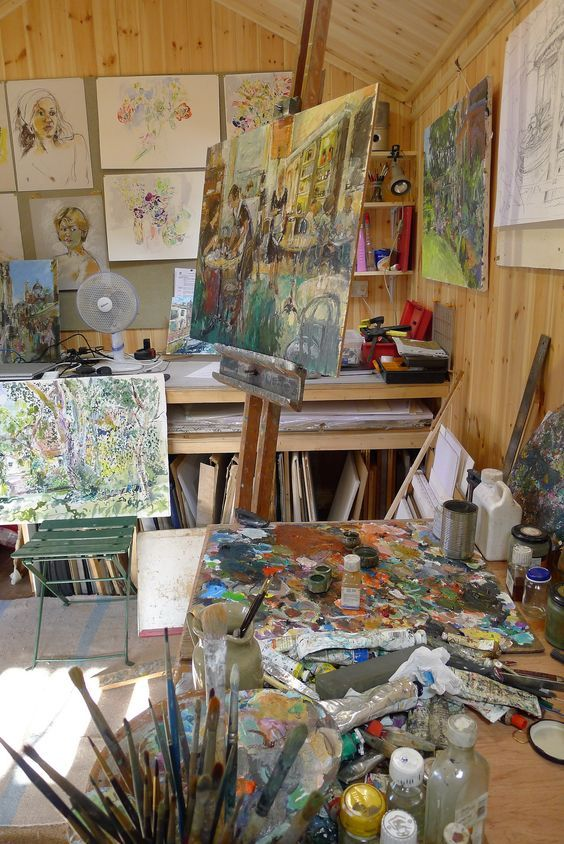

Pintura en lienzo
La técnica clásica de pintar sobre un lienzo utilizando óleos, acrílicos, acuarelas o pasteles para plasmar imágenes o emociones.
Óleo
- Técnica que permite detalles finos y transiciones suaves de color.
- Conocida por su tiempo de secado lento y la riqueza de colores.
Acrílico
- Pintura que seca rápidamente, ideal para capas múltiples y detalles nítidos.
- Versátil y se usa en una variedad de estilos y técnicas.
Acuarela
- Ideal para capturar luz y atmósferas delicadas.
- Pintura que utiliza pigmentos disueltos en agua, dando efectos suaves y transparentes.